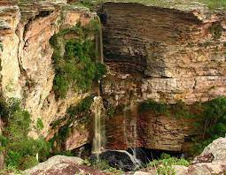
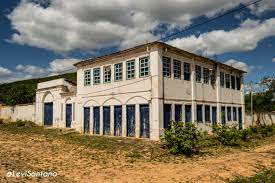
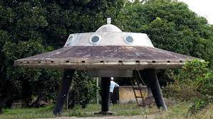

Cachoeira Ferro Doido
Para chegar nas cachoeiras do ferro doido é necessário percorrer uma pequena trilha, que apesar de pequena é um pouco complicada, mas vale muito a pena os paredões são impressionantes, o banho de cachoeira é muito divertido e o rio forma uma piscina que dá pra aproveitar bem. Atenção para aqueles que não sabem nadar, alguns pontos são bem fundos, como a água é escura não dá pra perceber muito. De toda forma se estiver pela região de Morro do Chapéu / Irecê, vale mesmo conferir!
Vila do Ventura
A Vila do Ventura foi fundada por volta de 1840 por garimpeiros. No entanto, tais garimpeiros, que eram foragidos de Lençóis, chegam na Vila do Ventura e ali, encontram diamantes e carbonato.
Assim essa descoberta, acabou atraindo outros garimpeiros que buscavam riqueza na terra. Inclusive, Ventura era o nome de um dos primeiros garimpeiros que chegou à vila – e esta acabou sendo conhecida pelo seu nome. Logo, a vila viveu seu apogeu desde esse momento até as primeiras décadas do século XX.
Disco Voador
A réplica lúdica do disco voador de Morro do Chapéu, na Chapada Diamantina, está viralizando nas redes sociais. Alguns dos internautas chegaram a fazer especulações sobre os vídeos da transferência do equipamento, no qual está acontecendo para a construção de uma praça.
A prefeita, em outra ocasião, enfatizou que o disco é obtido como um dos cartões postais da cidade. “Disco sempre despertou curiosidade dos visitantes”, destacou a gestora Juliana Araújo (PL), que enfatiza a repercussão turística do monumento.